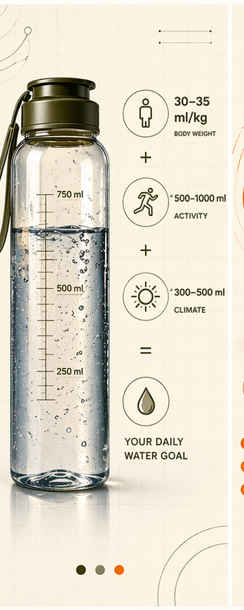

«Пей 2 литра в день» — это совет для ленивых, которые не хотят думать. Правда в том, что норма воды индивидуальна и зависит от твоей цели.
Спортсмену нужно больше воды, чем программисту. Человеку в жаре нужно больше, чем в прохладе. Пить 2 литра «для всех» — это как давать всем одинаковые дозировки лекарств — кому-то помогает, кому-то вредит.
Разбираем научную формулу, коррекцию по целям (спорт, интеллектуальная работа, восстановление после болезни), и как MYKORA помогает оптимизировать гидратацию.
Ключевая идея: норма воды — это не универсальные «2 литра», а формула с поправками: вес, спорт, кофеин, климат, восстановление, сон и электролиты.
Это не 2 литра для всех, а индивидуальная формула:
Твой вес (кг) × 30 мл = суточная норма воды
Важно: это базовая норма, без учёта активности, климата, целей. Далее коррекция.
Базовые 30 мл × вес — это отправная точка. Но это работает, только если ты не делаешь ничего экстра. В реальности нужны коррекции:
| Фактор | Коррекция | Пример (70 кг базовая 2.1 л) |
|---|---|---|
| Интенсивный спорт (60+ мин в день) | +500-750 мл | 2.1 л + 0.65 л = 2.75 л |
| Умеренный спорт (30-45 мин в день) | +300-400 мл | 2.1 л + 0.35 л = 2.45 л |
| Жаркий климат или лето | +400-600 мл | 2.1 л + 0.5 л = 2.6 л |
| Кофе / чай / кофеин (3+ чашек) | +400 мл (за каждый кофеин) | 2.1 л + 0.4 л = 2.5 л |
| Интеллектуальная работа (8+ часов) | +300-400 мл (мозг требует больше воды) | 2.1 л + 0.35 л = 2.45 л |
| Восстановление после болезни | +500-800 мл | 2.1 л + 0.65 л = 2.75 л |
| Высокогорье или сухой климат | +600-1000 мл | 2.1 л + 0.8 л = 2.9 л |
| Минус: сидячая работа, холод | -200-300 мл (потери ниже) | 2.1 л - 0.25 л = 1.85 л |
Почему факторы складываются: каждый из них увеличивает потери воды через разные каналы. Спорт = пот, кофеин = мочеиспускание, жара = испарение, интеллектуальная работа = биохимические потери в мозге. Если у тебя одновременно 2-3 фактора (спорт + жара + кофе), то коррекции складываются.
Расчёт: 70 × 30 = 2100 мл + 650 мл (спорт) = 2.75-3 литра в день
Распределение: утро 500 мл, тренировка 750 мл, после тренировки 500 мл, остаток равномерно распределить (500-750 мл)
Нутрицевтики: электролиты во время и после тренировки, Магний после, Кордицепс для восстановления
Расчёт: 70 × 30 = 2100 мл + 350 мл (работа мозга) + 400 мл (кофе) = 2.85 литра в день
Распределение: утро натощак 500 мл, 9:00 кофе + вода, 11:00 стакан воды, 13:00 обед + вода, 15:00 вода + Кордицепс (спад энергии), 17:00 вода, 20:00 Рейши для восстановления
Нутрицевтики: Ежовик (фокус, NGF), D3 (нейропротекция), Omega-3 (воспаление мозга), Магний (расслабление мышц от сидячей работы)
Расчёт: 70 × 30 = 2100 мл + 650 мл (восстановление) = 2.75 литра в день
Распределение: равномерно в течение дня, маленькими глотками (не залпом), с электролитами
Нутрицевтики: электролиты (натрий, калий), Рейши (иммунитет + восстановление), Витамин D3 (иммунная функция), Кордицепс (энергия)
| Время | Количество | С чем пить |
|---|---|---|
| 6:00-7:00 (утро) | 400-500 мл | Вода натощак, опционально с морской солью |
| 9:00 | 200-300 мл | После завтрака, перед кофе или вместо части кофе |
| 11:00 | 250 мл (снэк) | Обычная вода, если работаешь мозгом + Ежовик |
| 13:00 (обед) | 300-400 мл | Во время еды или после, помогает пищеварению |
| 15:00 (спад энергии) | 300 мл | Вода + Кордицепс (если нужна энергия) или просто вода |
| 17:00 | 250 мл | Если ещё на работе |
| 19:00-20:00 (ужин) | 300 мл | Вода во время еды |
| 20:30-21:00 | 200 мл (дополнительно) | Рейши + Магний (нет воды за 2 часа до сна, но лекарство с небольшой водой — ок) |
Правило: моча должна быть светло-жёлтой (как лимонный сок), не бесцветной и не тёмной.
Забудь про 2 литра для всех. Вот что работает:
Результат: через две недели энергия выше, фокус лучше, сон глубже, восстановление быстрее. Это не магия, это биология.
Калькулятор индивидуальной нормы воды + электролитный миксер + Магний + Кордицепс + Рейши для полного цикла гидратации.
Узнать подробнее